ミラノが雨だったのでベネチアに来てみた。裏路地と運河が無限に張り巡らされた水上都市。がちがちの観光地なのでしばらく歩いてるとおなかいっぱい感が出てくる。
料理の美味しさや種類の豊富さは、イタリアやフランス ＞ ドイツやスイスやイギリス。気候的条件や地理的条件による差が大きいとはいえ、「料理の美味しさ」と「教会の宗教美術の豪華絢爛さ」は相関してる気がしてならない。カトリックかプロテスタントか。質素倹約を重んじるプロテスタントからは贅沢を尽くした美食の文化は生まれにくい。ドイツパンは種類も豊富だけど毎日の食事パンとしての（贅沢な領域ではない）ハードパンの深化だったと言える。南ドイツ（カトリックが多い）のほうが北ドイツ（プロテスタントが多い）より食事が美味しい。美しいもの・美味しいものは、実用性からはみ出た部分から生じるのであって、文化が醸成するには蕩尽（ポトラッチ、平たく言えば無駄遣い）を肯定する価値観が必要。カトリック教会の過剰な宗教美術と豊かな食文化はつながっている。
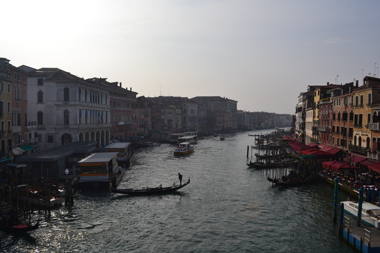
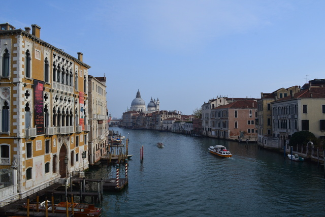
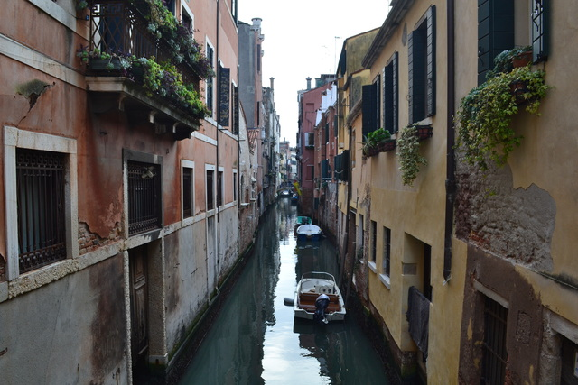
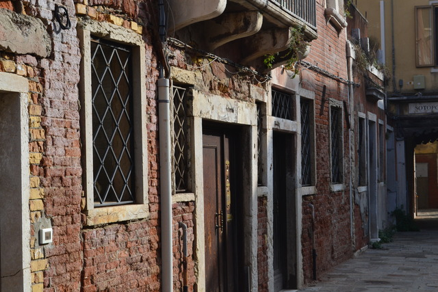
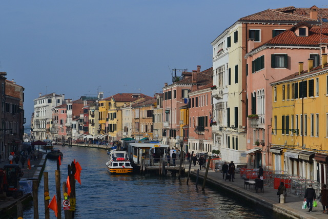
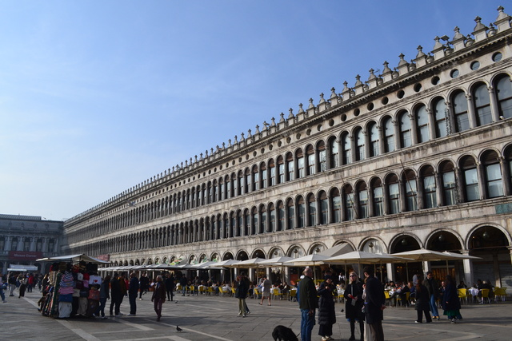
ボローニャの魚市場。マダイ、ヘダイ、スミイカ、スズキ、ボラ、マイワシ、カタクチイワシ、カタボシイワシ（？）、ヒメコダイ（？）、タチウオ、シャコ、マサバ、アカエイ、シタビラメ・・・日本の魚とちょっと顔つきが違う。活〆の技術は広まってないみたい。
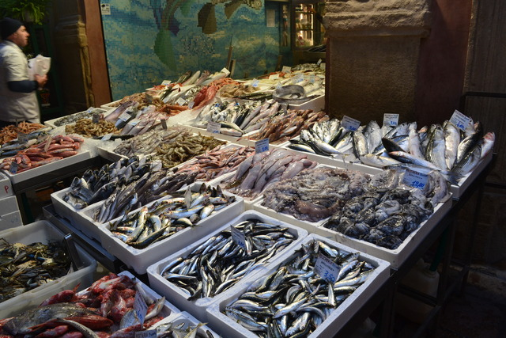
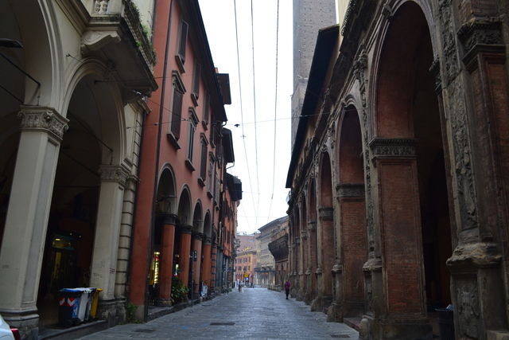
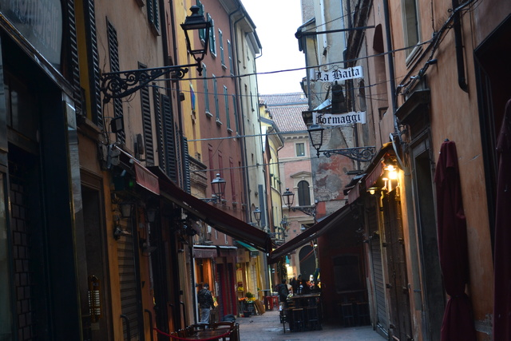
ヴェネツィアやミラノほど観光地化されておらずイタリアの地方都市の息遣いが感じられるのがいい。
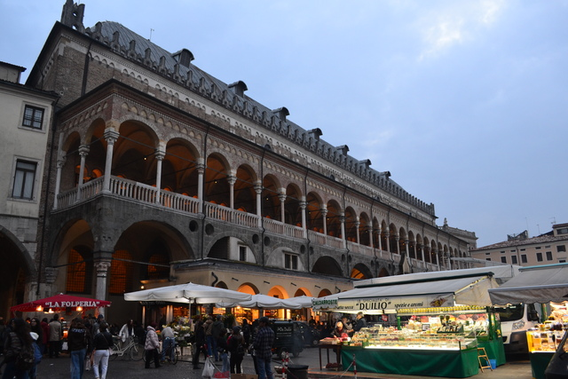
深い霧に包まれた街、降り続く秋の冷たい雨に濡れた石畳。こんな日にカフェに入って暖かい紅茶をゆっくり飲むのもいいなと思った。
この日はTrenord全線でストライキがあって、ベルガモからの電車はすべて運休。他の街へ行くこともできず、郊外のベルガモ空港まで行ってそこから高速バスでミラノ中央駅まで帰ってきた。調べてみるとイタリアは月1回のペースでストライキをやっているらしい。運行保証時間帯というのが法律で定められていて、朝6〜9時と夜6〜9時は列車の運行が保証されているものの、逆に言えば他の時間帯はストライキが起きうるということで日本と価値観が違いすぎる。
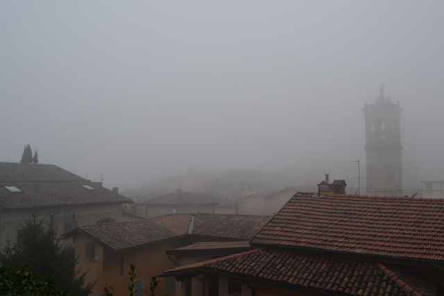
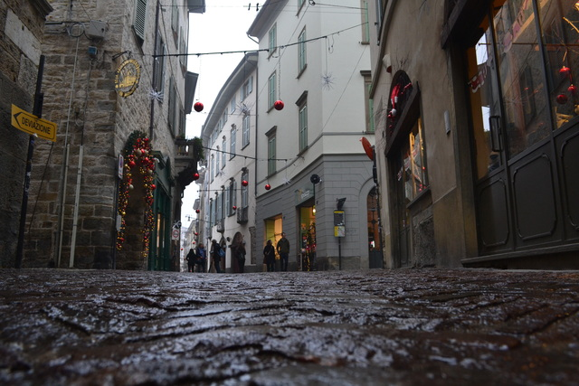
武蔵小山の商店街の再現度が案外高いことを理解した 笑
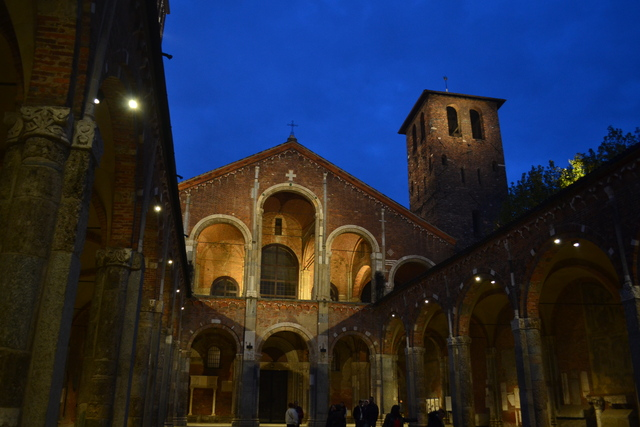
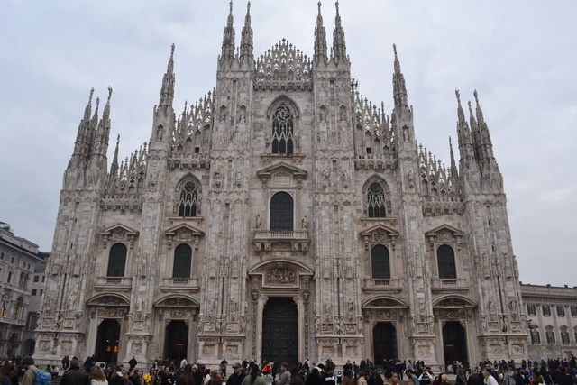
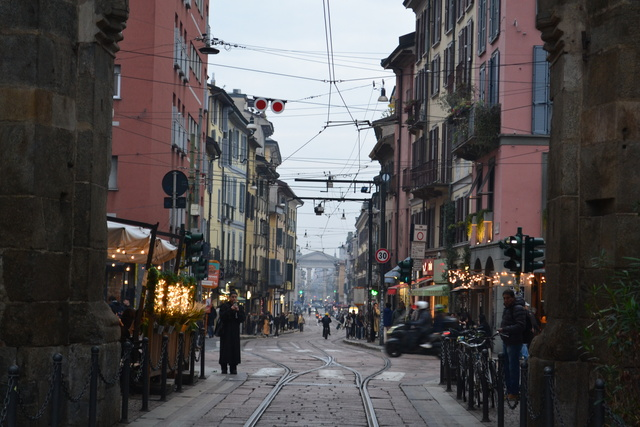
ベルニナ線はイタリア国境を越えてすぐの街ティラーノが終点。